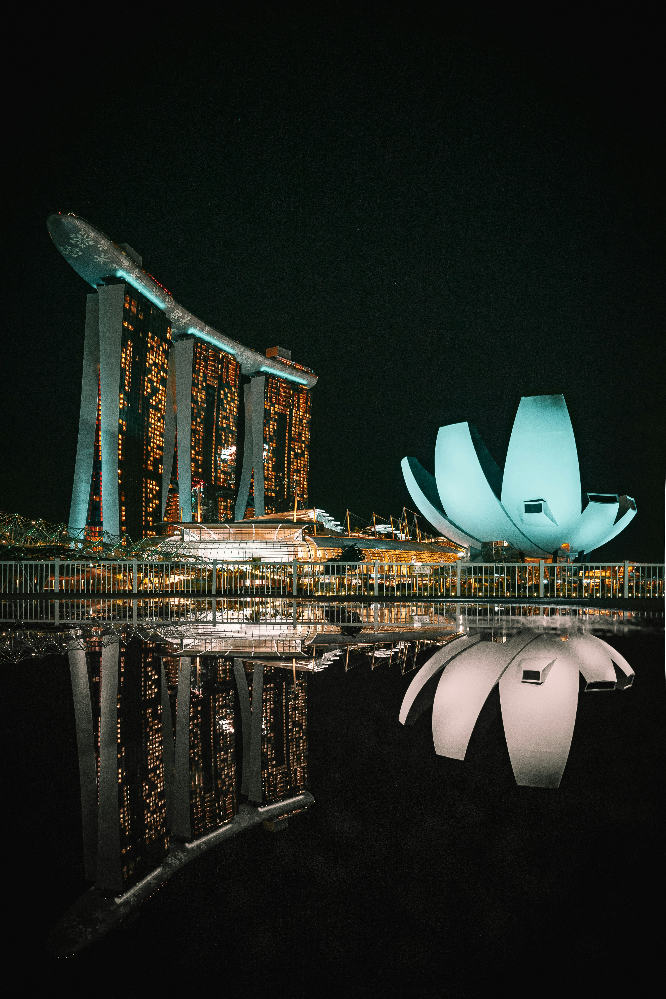
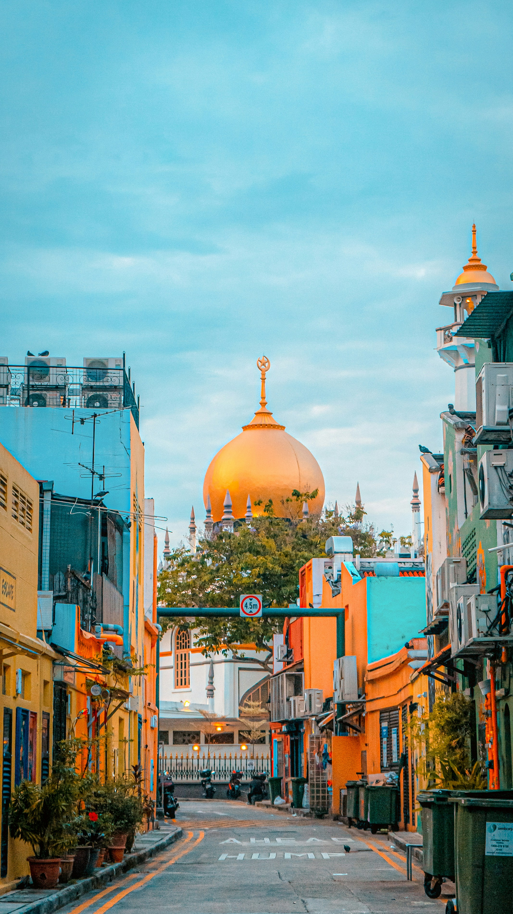
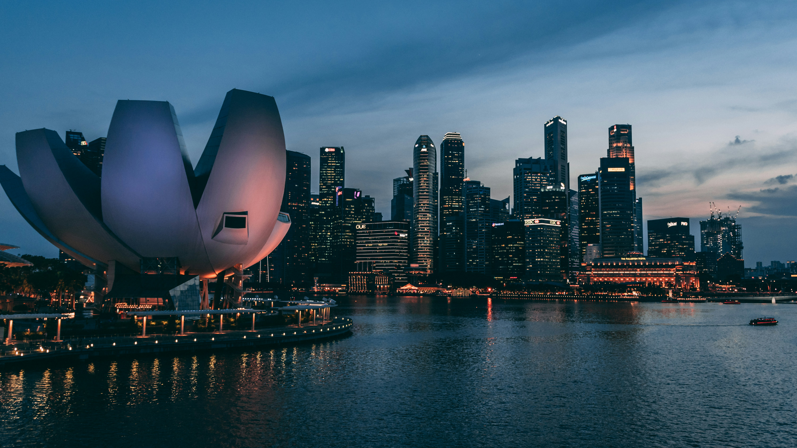
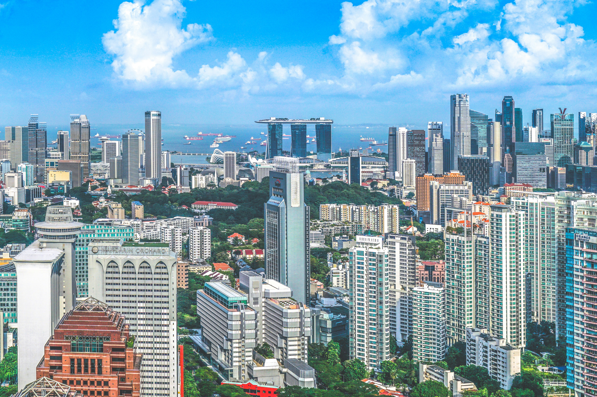
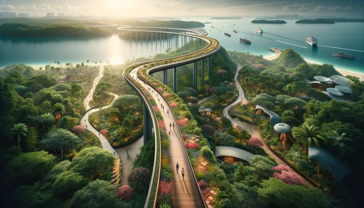

Singapore is a city that lives in the future. This island nation, often called
the "Red Dot," has transformed itself into a global hub of innovation, luxury, and sustainability. It is a place
where futuristic supertrees glow against the night sky, and colonial-era shophouses sit alongside
glass-and-steel skyscrapers. Singapore offers a seamless blend of world-class shopping, Michelin-starred dining,
and a lush, tropical "City in a Garden" philosophy that is truly unique.
1. Gardens by the Bay: A Vision of Tomorrow

Gardens by the Bay is Singapore's horticultural masterpiece, a sprawling 101-hectare park
that stands as a bold testament to the country’s "City in a Garden" vision. The most recognizable features
are the Supertrees—towering vertical gardens that reach up to 50 meters in height. These structures are not
only visually stunning but also functional, equipped with solar cells to generate electricity and designed
to collect rainwater for irrigation. Nearby, the Flower Dome and Cloud Forest conservatories offer a
climate-controlled escape into diverse botanical worlds. The Cloud Forest, in particular, features a massive
indoor waterfall and a lush mountain draped in exotic plants from tropical highlands. Walking along the OCBC
Skyway at dusk, as the Supertrees come alive with a mesmerizing light and sound show, provides a
breathtaking perspective on how Singapore has successfully integrated advanced technology with natural
beauty.
2. Marina Bay Sands: The Pinnacle of Luxury

Dominating the Singapore skyline, Marina Bay Sands is an architectural marvel and a global
icon of luxury. Designed by Moshe Safdie, the three 55-story towers are crowned by the Sands SkyPark, a
340-meter-long platform that resembles a ship resting across the buildings. This SkyPark houses the world’s
largest rooftop infinity pool, offering swimmers an unparalleled 360-degree view of the city’s urban
landscape. Beyond its striking exterior, Marina Bay Sands is a complete entertainment destination, featuring
a high-end shopping mall with celebrity chef restaurants, a world-class casino, and the ArtScience Museum,
whose lotus-inspired shape is another landmark in itself. Whether you are enjoying a sunset cocktail at a
rooftop bar or exploring the vibrant Shoppes below, Marina Bay Sands represents the definitive address for
glamour and sophistication in Southeast Asia.
3. Sentosa Island: A State of Tropical Fun

Just a short cable car or monorail ride from the main island, Sentosa is Singapore's
dedicated island gateway for fun and relaxation. This former military fortress has been transformed into a
world-class playground, home to Universal Studios Singapore, where movie-themed thrills await travelers of
all ages. For those who prefer the ocean, the S.E.A. Aquarium—one of the world’s largest—offers an immersive
look into the vibrant marine life of the Indo-Pacific. Sentosa’s coastline is dotted with pristine man-made
beaches like Siloso and Palawan, where luxury beach clubs and tranquil resorts provide a stark contrast to
the city’s fast-paced energy. Whether you are seeking high-octane adventure at the Skyline Luge or a quiet
moment of reflection at a world-class spa, Sentosa offers a myriad of experiences that celebrate the joy of
tropical island life.
4. Jewel Changi: Nature in the Heart of Transit

Often cited as the best airport in the world, Singapore’s Changi Airport reached new
heights with the opening of Jewel. This multi-dimensional lifestyle destination is a sparkling dome of glass
and steel that seamlessly connects three of the airport's terminals. At its center is the stunning HSBC Rain
Vortex, the world’s tallest indoor waterfall, which cascades seven stories through a lush terraced forest
known as the Shiseido Forest Valley. Jewel is much more than a transit hub; it is a vibrant center for
shopping, dining, and play. Visitors can walk across the Canopy Bridge, 23 meters above the ground, or
explore the Hedge Maze and Manulife Sky Nets. At night, the waterfall becomes the canvas for a spectacular
light and sound show, making Jewel a destination in its own right where the transit experience is elevated
into an unforgettable encounter with nature and innovation.
5. Orchard Road: A World-Class Shopping Extravaganza

Orchard Road is Singapore’s retail therapy epicenter, a 2.2-kilometer boulevard lined with
futuristic shopping malls, flagship boutiques, and luxury department stores. Once a pastoral lane of nutmeg
and fruit orchards, it has evolved into one of the world’s most famous shopping streets. From the
avant-garde design of ION Orchard to the sophisticated elegance of Ngee Ann City, the variety is staggering.
Beyond shopping, Orchard Road is a cultural hub featuring art galleries and Michelin-starred dining options.
During the festive seasons, especially at Christmas, the entire street is transformed into a shimmering
wonderland of lights and decorations. For any visitor, a walk down Orchard Road is a sensory immersion into
the high-octane luxury and urban energy that defines modern Singapore.
6. Singapore Zoo & Night Safari: Wildlife Without Borders

The Singapore Zoo is globally renowned for its "open concept" design, where animals are
housed in large, naturalistic enclosures separated from visitors by hidden moats rather than bars. This
immersive approach allows for an up-close look at some of the world’s most beautiful creatures, from the
majestic white tigers to the playful orangutans in their free-ranging habitat. As the sun sets, the
neighboring Night Safari—the world’s first nocturnal zoo—offers a completely different experience. Traveling
by tram or foot through seven geographical zones, visitors can witness the secret lives of nocturnal animals
like the Malayan Tapir and the clouded leopard under a subtle, moon-like lighting. These parks are leaders
in wildlife conservation and education, providing an experience that is as enlightening as it is thrilling.
7. Clarke Quay & Boat Quay: The Heart of the Singapore River
Clarke Quay and Boat Quay represent the historic heartbeat of Singapore’s commerce, where
traditional bumboats once unloaded their cargo. Today, these riverfront districts are the center of the
city’s vibrant nightlife and dining scene. The restored colonial-era warehouses of Clarke Quay now house a
dizzying array of bars, clubs, and restaurants under a unique, futuristic canopy that provides shade and
ventilation. Boat Quay, with its row of beautifully preserved shophouses, offers a more relaxed atmosphere
for al fresco dining with a view of the towering financial district skyscrapers. Taking a river cruise at
night, as the historic quays and modern skyline are reflected in the water, offers a panoramic view of
Singapore’s journey from a humble fishing village to a bustling global metropolis.
8. Little India & Chinatown: A Vibrant Cultural Heritage

Singapore’s multicultural soul is most vividly expressed in its ethnic enclaves. In
Chinatown, traditional medicine shops sit alongside trendy bars, and the Buddha Tooth Relic Temple stands as
a magnificent centerpiece of Tang-style architecture. Just a short journey away, Little India explodes with
color, scent, and sound. The air is thick with the fragrance of jasmine garlands and spices, while the
colorful facades of shophouses and the intricate carvings of Sri Veeramakaliamman Temple tell the story of
the Indian community’s deep roots in the city. Exploring these neighborhoods provides a profound
understanding of Singapore’s heritage, where diverse traditions are not only preserved but actively
celebrated. From the bustling street markets to the quiet sanctuaries of faith, Little India and Chinatown
offer a glimpse into the human stories that built this modern nation.
The Infinite Innovation of Singapore: Singapore is a
destination that constantly reinvents itself, proving that a small island can have a massive global impact. Its
combination of urban efficiency, world-class luxury, and tropical beauty creates an experience that is both
exhilarating and effortless. Whether you are looking for the future of architecture or the roots of Asian
tradition, the Lion City offers a journey of discovery that never truly ends. Welcome to Singapore!
The Signature of Excellence
Why Choose Luxe Voyages?
Curated Excellence
Every destination and accommodation is hand-selected to meet the
highest standards of luxury.
Direct Booking
Book directly with verified premium providers to ensure the best rates
and exclusive perks.
Global Legacy
Our worldwide presence ensures you have premium support wherever your
journey takes you.
Guest Experiences
From Our Global Travelers
"Luxe Voyages didn't just book a trip; they crafted an unforgettable experience. Every detail
was handled with unparalleled professionalism."
Julian Montgomery
Verified
Global
Traveler